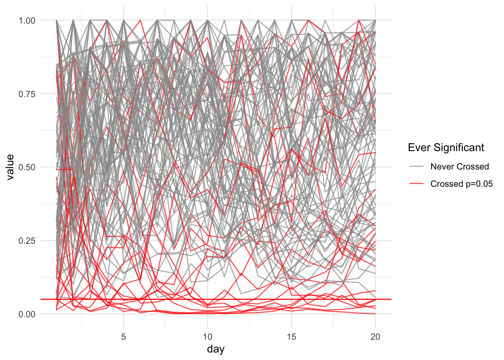

Say you are a data scientist running an A/B test on a new feature. Let’s say you run this experiment for 20 days, and on each day get 10,000 samples. Further, suppose that the groundtruth is that for both version A and version B, the clickthrough rate1 is 0.1%. We can simulate the total number of clicks during a single day as following a Binomial distribution \(B(n = 10000, p = 0.001)\)2.
1 A typical definition for Clickthrough rate (CTR) is clicks \(\div\) impressions (number of times the ad is shown). See this page for details.
2 … for simplicity assume the 20 Binomial distributions are independent from each other
Let’s say we use the Chi-squared two sample proportion test.
If we peeked at the p-value during the data collection process, before the 20-days run up, and then decided to stop collecting data on day 3 or day 4, then we probably would never realize that in the long run, the p-value is not statistically significant.
# A tibble: 2 × 2
# Groups: ever_sig [2]
ever_sig n
<lgl> <int>
1 FALSE 1620
2 TRUE 380
Code
total_sim_df %>%ggplot(aes(x = day, y = value, group=exp_id, color = ever_sig)) +geom_line(alpha =0.7) +scale_color_manual(name ="Ever Significant",values =c("TRUE"="red", "FALSE"="gray60"),labels =c("TRUE"="Crossed p=0.05", "FALSE"="Never Crossed") ) +geom_hline(yintercept =0.05, color ="red")

Note that the above example is adapted from [how not to run an A/B test].
Anyways, the promise that the frequentist paradigm is making is that it helps control the type I error. When executed correctly. Bayesians don’t help with this.
If we do want to do things correctly and not let’s say, run an experiment for an indefinite amount of time, another thing to do is to implement (frequentist) sequential Bayesian testing correctly.
Does Bayesian A/B Testing solve the problem of peeking3?
The short answer is not necessarily. See explanations here and here.
# code-fold: true # test to see if this is right ... chisq.test(matrix(c(127, 5734-127, 174, 5851-174), nrow=2, byrow=TRUE))
Another blogpost from Kaggle that does not use PyMC …? but uses statsmodels instead (and plotnine …? did not know plotnine is a thing for 6 years ago …)
If you look at the first formula for binary outcomes, it says that when the prior is uninformative (i.e., uniform, alpha = beta = 1), then the updated posterior is …? So in a sense, a beta distribution is a very special kind of distribution4 that allows closed-form calculations of updated posterior I believe …
viewof mu = Inputs.range([-10,10], {value:0,step:0.1,label:"Location (mu)"})viewof sigma = Inputs.range([0.1,10], {value:1,step:0.1,label:"Scale (sigma)"})viewof lambda_val = Inputs.range([-5,5], {value:0,step:0.1,label:"Skew (lambda)"})viewof nu = Inputs.range([1,100], {value:10,step:1,label:"Degrees of Freedom (nu)"})
Some reflections
I think the real thing underlying all of this is that they each contain their baked in assumptions, and it is important that we know which assumptions to use and which not to use.
![]()